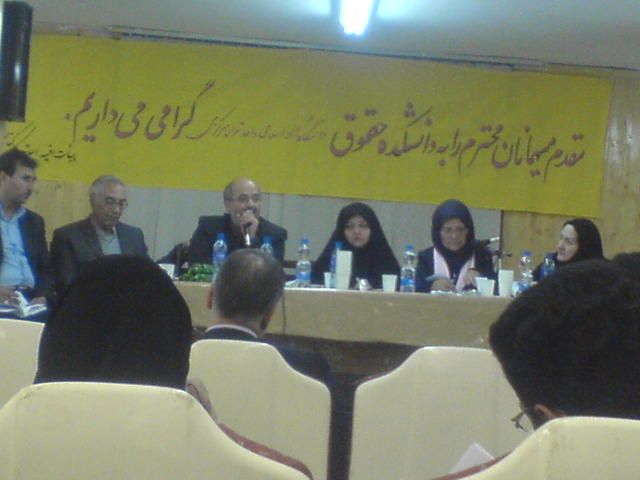

پذيرش > تریبون > گزارش كمپين > استدعا داریم صریح هم ایرادات را بگویید و هم راه حلش را
 در همایش نقد و بررسی لایحه حمایت از خانواده در دانشکده حقوق دانشگاه آزاد مطرح شد: در همایش نقد و بررسی لایحه حمایت از خانواده در دانشکده حقوق دانشگاه آزاد مطرح شد:

 استدعا داریم صریح هم ایرادات را بگویید و هم راه حلش را استدعا داریم صریح هم ایرادات را بگویید و هم راه حلش را
14 آذر 1387 - گزارش : مریم مالک - نسخه قابل چاپ
تغییر برای برابری - روز 12 آذر همایش نقد و بررسی لایحه حمایت از خانواده در سالن اجتماعات دانشکده حقوق دانشگاه آزاد اسلامی واحد مرکز برگزار شد. سخنرانان این نشست را اساتيد، حقوقدانان و نمايندگان قوه قضائيه و مجريه تشکیل می دادند به نقد و بررسی لایحه حمایت خانواده پرداختند.
دکتر مالکی :نواقص همچنان باقی است
دکتر مالکی رئیس دانشکده حقوق دانشگاه آزاد اسلامی واحد مرکز با تبریک فرارسیدن 16 آذر روز دانشجو اظهار کرد: " لایحه پس از طی فراز و نشیب فراوان در دستور کار مجلس قرار گرفت بعد از تصویب نهایی قرار است در سرنوشت نهاد خانواده حاکم شود. "وی با اشاره به دغدغه ماده 23 و 25 این لایحه گفت: " این دو ماده از لایحه حذف شده و گویا دغدغه ها از بین رفته است اما نواقص و انتقاداتی وجود دارد که هدف این همایش در واقع یاری به قانون گذار در این زمینه است.
دکتر ارفع نیا: این دو ماده همه چیز را تحت شعاع قرار داد
خانم دکتر ارفع نیا دبیر همایش قوه قضائیه درباره تفکر حاکم بر نگارش لایحه گفت:" این لایحه با فکر مترقیانه نوشته شده است. آئین دادرسی و تشریفات آن نیز بسیار مناسب بود اما این دو ماده همه چیز را تحت شعاع قرار داد." وی اشاره داشت که کانون وکلای مرکز به کمیسیون قضایی و حقوقی مجلس پیشنهاد تصویب لوایح بهتر و نظر خواهی از کانون وکلا را داده بود و مجلس با این پیشنهاد موافقت کرد و یکی از لوایح، لایحه حمایت از خانواده بود که از اعضای هیات مدیره گروه 4 نفره تشکیل شد و از تعدادی اساتید دعوت به عمل آمد.

دکتر شاه حیدری: قضا زدایی از اهداف تدوین لایحه است
دکتر شاه حیدری نماینده قوه قضائیه با موضوع " اهداف و چگونگی تدوین لایحه حمایت از خانواده" به بررسی اهداف و چگونگی تدوین لایحه حمایت از خانواده پرداخت و اظهار کرد: " خانواده یکی از بحث های حقوقی و اجتماعی است و مواد زیادی مستقیم به امر خانواده اختصاص دارد و در فقه هم اهمیت زیادی دارد. " وی با اشاره ابه این که قانون حمایت از خانواده در 1353-1346تصویب شد در مورد یکی از مواد این لایحه که امکان طرح دعوا در محل زندگی زوجه در این لایحه پیش بینی شده است گفت:" ما به معنای صحیح دادگاه خانواده نداریم."
وی گفت :"در اين لايحه پيشبينی شده بانوان دارای پايه قضايی بايد به عنوان عضو دادگاه حضور داشته و در فرآيند صدور رای مداخله كنند كه "كلمه بايد" در دولت به حتيالمقدور تبديل شده بود كه در مجلس اين موضوع بازگشت به لايحه قوه قضاييه خواهد كرد.
وی ادامه داد:" قضا زدایی یکی دیگر از اهداف تدوین لایحه است، باید قضازدایی به اموری را که دارای ماهیت قضایی نیستند از دوش قاضی برداریم و به افراد متخصص دیگر واگذار کنیم که در این زمینه مراکز مشارکت در امور خانواده در دادگاه خانواده متشکل از روان شناسان، جامعه شناسان، مددکاران اجتماعی و حقوقی می توانند فعال باشند."
وی با بیان اینکه بسیاری از مشکلات خانواده قضایی نیست گفت: " با ورود مشکل، افراد به مرکز مشارکت در امور خانواده راهنمایی می شوند در صورت عدم رفع مشکل راهکار قضایی به عنوان آخرین راهکار مورد توجه قرار می گیرد."
دکتر عراقی: بانوان مطالبه حق می كنند و قانونگذاران نيز ناگزیرند گام بردارند
دکتر عراقی استاد دانشگاه تهران با موضوع " نکات قوت و ضعف لایحه حمایت از خانواده" گفت: " در دهههای اخير به بركت آموزش و تحصيل، بانوان به حقوق شان پی بردند و مطالبه حق می كنند و قانونگذاران نيز ناگزیر شدند گامهايی را بردارند كه اين اقدامات به لحاظ برخی سنتهای تند و كند است. یک سری سنتها حالت تقدیس پیدا کردند و تغییر آنها ممکن نیست مثلا در كشورهای كاتوليك مذهب كه طلاق را جايز نمی دانند به دشواری اين كار انجام شد، در اسپانیا و کشورهای دیگر به سختی طلاق برقرار شد برای اینکه جامعه فکر می کرد یک گناه نابخشودنی است. در حقوق ما طلاق مجاز است اما برای زن سخت است. آیا می شود برای راههای مستقیم قرائت تازه ای پیدا کرد و یا در روایات؟ این کار علما است کار ما نیست اما راههای غیر مستقیم از طریق حق وکالت و عسر و حرج را برای زن قرار داده است. "
وی با بيان اينكه وجود مستشار خانم دارای پايه قضايی يكی از نكات قوت اين لايحه است، پيشبينی مركز مشاوره امور خانواده و آييندادرسی را از ديگر نقاط مثبت لايحه خواند و ابراز امیدواری کرد که خانمها روزی قاضی محکمه هم بتوانند باشند.
وی گفت: " در مورد مراکز مشاوره خانواده هزینه ای که برای افراد خواهد داشت باید مشخص شود تا افراد بی بضاعت نیز از آن استفاده کنند.
یکی دیگر از اشکالات نحوه آموزش است که آموزش حقوق در دانشکده های ما بصورت خشک بوده و به مسائل حقوقی خیلی کمتر پرداخته می شود و حقوقدانان ما دید اجتماعی ندارند. مسائل فقهی خیلی مطرح می شود اما به مسائل اجتماعی زیاد پرداخته نمی شود این تجربه من در 39 سال تدریس می باشد.
وی با تاکید براین که یکی از مهمترین نقاط ضعف لایحه مسئله طلاق توافقی است مواد 26، 27 و 29 و تبصره ماده 19 اين لايحه را قرائت کرد و گفت:" با این توضیحات و بخصوص ماده 29 این خطر وجود دارد. طلاق توافقی اینطور نیست که هر وقت خواستند محضر بروند. مرکز مشاوره باید نظر بدهد و برای رای و تصمیم صلاحیت ندارد. باید به طرفین مهلت بدهند برای فکر کردن برای اینکه جوانان کم تجربه هستند و زود می خواهند طلاق بگیرند. اينکه طلاق توافقی را نبايد خيلی ساده و آسان گرفت و در لايحه حمايت خانواده در بحث طلاق توافقی بايد تجديد نظر صورت بگيرد.
ماده بعدی شورای حل اختلاف است معلوم نیست شورا چقدر با موازین قانونی و شرعی آشنایی دارد؟
وی اعلام صريح منسوخ شدن قوانين قبلی با تصويب اين لايحه را يكی ديگر از نقاط مثبت لايحه خواند و افزود: " نسخ اینکه قانونگذار قوانین دیگر را نسخ کند خوب است. اینجا نکات مثبتش این بوده که آن قوانین که باید نسخ شود را بیان کرده است. اما آن چیزهایی که منسوخ کردند باید دقت شود مثلا مسئله آزمایش پزشکی است که در سال 1317 این قانون تصویب شد و به پزشک ارجاع دادند این پزشک هر پزشکی می تواند باشد. در رابطه با گواهی پزشكی اشكالاتی وجود دارد كه ضمانت اجرايی محكمی را برای لايحه بايد پيشبينی كرد بنابراین روابط آزاد و خارج از ازدواج می تواند وجود داشته باشد، روابط پرخطر وجود دارد این واقعیت تلخ وجود دارد و باید تدابیری اندیشید تا جلوی بيماريها و نارسايیها گرفته شود كه اين کار قانونگذار نیست کار تبلیغات است زیرا تحول فرهنگی نياز به قانون ندارد. حتی مسائل روانی هم بسیار مهم است پیش گیری خیلی بهتر از درمان است و ما اصلا به آن بها نمی دهیم."
وی نکات مثبت و منفی مواد دیگر لایحه را نیز بیان کرد: "ماده 16 قانون این مسئله تعدد زوجات را مشکلش را حل کرده است. و اگراین را نسخ نمی کردند حساسیت بوجود نمی آورد. ماده 18 قانون نیز در مورد اشتغال زن و مرد مناسب بود. بند4 ماده 53 لایحه اگر حذف شود خیلی مشکلات حل می شود." او در پایان ابراز امیدواری کرد که این لایحه به صورت هر چه مناسب تر و هر چه بهتر در احیای حقوق زنان تنظیم شود.
دکتر دهقان: لایحه مرحله طولانی را در پیش دارد، نامه بنویسید حتما به دست ما می رسد
دكتر دهقان عضو كميسيون حقوقی و قضايی مجلس شورای اسلامی با موضوع " آخرین وضعیت لایحه در کمیسیون حقوقی و قضائی مجلس شورای اسلامی"با بیان ابراز رضایت از برگزاری این چنین جلسات گفت: " ما مطالب اساتید را در جلسات مختلف می شنویم و فعلا می شنویم و نظرات اساتید و دانشجویان را خواهیم شنید. "
"در مورد لایحه ابتدا وارد مجلس شد و اگر تا پایان مجلس تصویب نشود تلاش ما بی ثمر خواهد شد در مورد این لایحه سر و صداهایی ایجاد شد و ما گفتیم این پیشنهادی بود و این پیشنهادات باید بررسی شود و کلیات این لایحه تصویب شد و جزئیات تصویب نشده است. باید نواقص برطرف شود. ما در کمیسیون 3 تا کمیته تخصصی داریم کمیته حقوق تخصصی – کمیته حقوق جزا و کمیته حقوق بین المللی. لذا این لوایح به آنجا می رود و ما از حضور اساتید در جلسات خصوصی استفاده می کنیم. " وی درادامه گفت :ایرادات ماده 4 را رفع کردیم الان در مرحله آغازین رسیدگی به جزئیات هستیم و استدعا کردیم از اساتید برای لایحه کمک کنند. این لایحه مرحله طولانی را در پیش دارد. نامه هم بنویسید حتما به دست ما خواهد رسید."
آقای رحیمی : طوری بحث شد که انگار لایحه تعدد زوجات است نه حمایت خانواده
آقای رحیمی مخبر کمیسیون حقوقی و قضایی مجلس شورای اسلامی سخنران بعدی گفت" "کمیسیون قضایی یک بابی را گشوده به جای اینکه قانون تصویب شود از اساتید و دانشجویان می خواهد که نظرات خود را بیان کنند. مثلا در کانون وکلای مرکز لایحه مجازات اسلامی را می خواهیم داوری کنیم واین خیلی مهم است. استدعایمان از شما این است که به صورت صریح هم ایرادات را بگویید و هم راه حلش را. در مورد لایحه خانواده کلیاتش تصویب شد و رفت به کمیسیون و انتقادات شروع شد اما متاسفانه طوری بحث شد که انگار تمام امتیازات کنار رفته بود و شده بود لایحه تعدد زوجات. جامعه دچار ناراحتی و اضطراب شده بود، آقای لاریجانی گفتند دقت بیشتری کنید که دو تا ماده حذف شد. در مورد ماده 4 آقای دکتر گفتند حذف شود اگر حذف شود قانونی در مورد تعدد زوجات نخواهیم داشت. اگر بخواهیم حذف کنیم همان ماده قبلی خواهد بود بنابراین در کمیسیون بیاییم یک چیزی تصویب کنیم نه ارجاع به مواد قبل شود و نه خانواده ها نگران شوند."
خانم دكتر قديری: این لایحه به جای حمایت از خانواده حمایت از اجزای خانواده است
خانم دكتر قديری، دبير كلينيك خانواده دانشگاه شهيد بهشتی با موضوع " گزارش نشست بررسی لایحه در دانشگاه شهید بهشتی و ضرورت حضور کارشناسان مشاوره در دادگاه خانواده " نیز گفت: " در پژوهشکده خانواده با حضور روان پزشکان، جامعه شناسان و اساتید مختلف در مورد لایحه خانواده نشستی انجام دادیم. توجه به ماده 23 و 25 لایحه باعث شده بود که به مواد دیگر لایحه توجه نشود. و از اساتید خواستیم بیایند که کسی نیامد و روانشناسان باز در مورد ماده 23 توجه کردند. بدلیل وجود ماده 23 و 25 این لایحه، لایحه حمایت از مرد است تا لایحه حمایت از خانواده."
وی در ادامه گفت در این نشست مطرح شد این لایحه به جای حمایت از خانواده حمایت از اجزای خانواده است. و پیشنهاد شد باید جلد 7 کتاب قانون مدنی را اصلاح می کردند. بحث عدم تبعیض یکی از مهمترین بحث های مهم هم در قانون اساسی و هم تعهدات جمهوری اسلامی به موجب میثاق حقوق مدنی و سیاسی است که پذیرفته و در لایحه به آن توجه نشده است.
وی در اعتراض به یکی از سخنرانان مبنی بر ماده ای که مالیات بر مهریه قرار داده اینکه چرا باید آمار زندانیانی که بخاطر مهریه بالا در زندان به سر برند پاسخ گفت: " من با مهریه بالا موافق نیستم اما این مصیبت هایی که برای زنان وجود دارد و زنان از پشتیبانی قانون برخوردار نیستند مهریه های بالا را رقم زده است والا زنان این کار را نمی کردند. و گذاشتن مالیات بر مهریه چاره ساز نیست تازه عنوان نشده که این مالیات را مرد بپردازد یا زن."
وی در ادامه گزارش گفت : " زوج درمانی یک رشته ای است که در دنیا وجود دارد اما در ایران متخصصان بسیار کمی در این زمینه وجود دارد طبق تحقیقات دکتر فروتن رئیس کلینیک سلامت خانواده دانشگاه شاهد بررسی که در مورد مشکلات جنسی خانواده انجام دادند 50 درصد از ریشه طلاق ها ریشه در اختلالات جنسی زنان وجود دارد و در این بررسی علل فیزیکی در این اختلالات سهم زیادی دارد." ایشان پیشنهاد دادند که یک پزشک آموزش دیده در مراکز مشاوره باید حضور داشته باشد و باید به این آمارها توجه شود. این 50 درصد آمار هم به راحتی انجام نشد چون به راحتی نمی آیند مطرح کنند و پیش بینی شده این آمار بیشتر از اینها است. و بنابراین تلاش کردیم که پزشک در مراکز مشاوره باشد."
خانم دکتر جوانمردی: این گواهی یعنی چه؟!
خانم دکتر جوانمردی عضو هيات علمی دانشگاه علامه طباطبايی با موضوع " نقد و بررسی لایحه حمایت از خانواده" گفت: یک نکته که اساتید دیگر اشاره نکردند مسئله این بود که رسيدگی به مسائل مالی و غيرمالی زن و شوهر از قبيل نفقه و نحوه نگهداری فرزند و نحوه پرداخت مهريه ، در زمان دعوای طلاق توسط يك قاضی و امكان تاسيس شعبهای از دادگاه خانواده خارج از كشور در محل سفارتخانهها و كنسولگریهای ايران یکی از نكات مثبت و مهم لايحه است.
وی اظهار داشت:" در مورد معایب بند 4 در مورد طلاق هم گواهی عدم امکان سازش و هم حکم طلاق را بیان کردند و روشن نیست این دو تا چه فرقی می کنند؟آیا دادگاه هر دو را صادر می کند؟ این گواهی یعنی چه؟ چرا اگر مرد تقاضای طلاق کند گواهی عدم امکان سازش صادر می شود اما اگر زن تقاضا کند حکم، صادر می شود و بعد آثار طلاق از لحظه ثبت است یا صدور حکم دادگاه؟ اگر در این فاصله یکی از طرفین فوت کند تکلیف آن طرف دیگر چه خواهد بود؟ این باید تجدید نظر شود." وی ماده 25 را نیز مورد انتقاد قرار داد و خواستار تصحیح آن شدند.
در پايان همایش پرسش و پاسخ از سوی حاضرین مطرح شد که اساتيد، حقوقدانان و نمايندگان قوه قضائيه و مجريه پاسخ دادند. یکی از اعضای کمپین یک میلیون امضاء از نمایندگان حاضر از کمیسیون مجلس درخواست کرد که از فعالین و حقوقدانان زن نیز در این کمیسیون کمک گرفته شود که پاسخ دادند از خانم های حقوقدان دراین سمینار همین الان دعوت می کنیم و هر حقوقدان و اساتیدی هم که بیایند با کمال میل از پیشنهاداتشان استفاده خواهیم کرد.
ارسال به
بالاترین
،
توییتر
،
فریندفید
،
فیسبوک
در همين بخش :
 دهمین دورۀ مراسم تندیس صدیقه دولت آبادی ۱۳۹۲ دهمین دورۀ مراسم تندیس صدیقه دولت آبادی ۱۳۹۲
کارت پستالهایی به بهانهی هشت مارس و به یاد همهی مبارزین راه برابری
بیانیه بیش از 350 تن از مدافعان حقوق زنان به مناسبت روز جهانی زن؛ زنان هر روز فرودستتر میشوند
لباسی که برای تن ما دوخته اند! /اعظم بهرامی
چالشها و چشمانداز فعالیت مدنی زنان
ديگر بخش ها :
طرح یک میلیون امضا
|
مقالات
|
سایت نوشته ها
|
اخبار
|
گزارش كمپين
|
گفت و گو
|
علیه سکوت
|
كوچه به كوچه
|
نامه های شما
|
گزارش ویژه
|
گفتگو با اعضا
|
ویژه سالگرد کمپین
|
تصویر برابری
|
دل آرام علی
|
تریبون
|
مقالات
|
تاریخ شفاهی
|
خارج از چارچوب
|
کتابخانه
|
درباره کمپین
|
کمپین در شهرها
|
کمپین در بند
|
صدای تغییر
|
ویژه 22 خرداد
|
لایحه حمایت از خانواده
|
گالری
|
عشا مومنی
|
امیر یعقوبعلی
|
خدیجه مقدم
|
راحله عسگری زاده و نسیم خسروی
|
پروین اردلان،جلوه جواهری، مریم حسین خواه، ناهید کشاورز
|
زینب پیغمبرزاده
|
سعیده امین، سارا ایمانیان، محبوبه حسین زاده، ناهید کشاورز و همایون نامی
|
احترام شادفر
|
نسیم سرابندی زاده،فاطمه دهدشتی
|
وبلاگ مهمان
|
پرونده خرم آباد
|
دستگیری ها
|
مریم مالک
|
پرستو اللهیاری
|
مهرنوش اعتمادی
|
سمیه رشیدی
|
Other Languages
|
همراهان
|
«فراخوان کمپین ده روز با بهاره هدایت»
| English
|